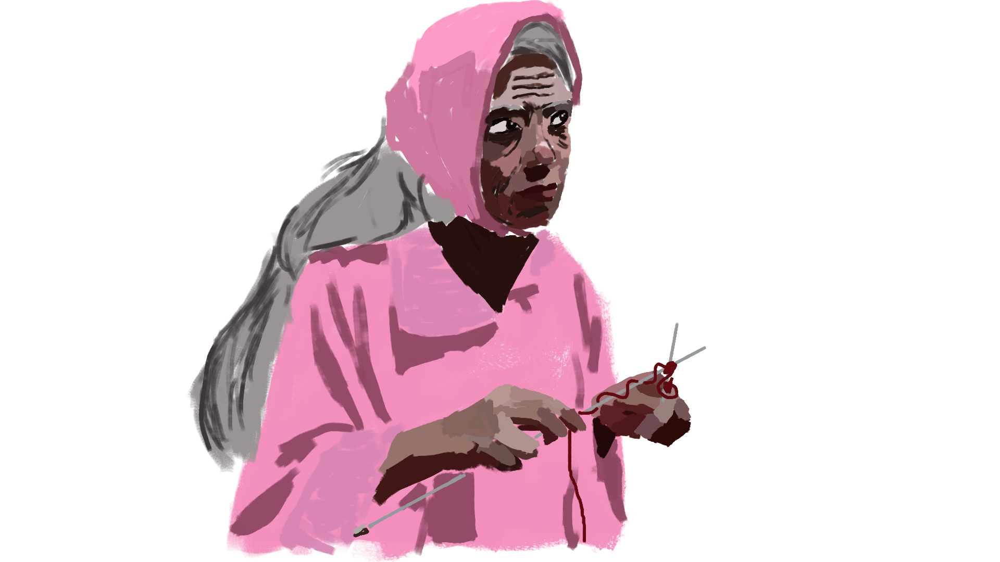

FUEGO
14 AÑOS
Una juventud marcada por decisiones impuestas.
Una película de Pictoris Studio
¿Qué queda de una vida cuando nunca pudiste elegirla?
01 / 06
02 / LA HISTORIA
Tres edades de María, tres capítulos de una misma película.
FUEGO
14 AÑOS
Una juventud marcada por decisiones impuestas.

TIERRA
34 AÑOS
El trabajo rural, la pérdida y los deseos desplazados.

AIRE
76 AÑOS
La memoria de aquello que nunca desapareció.
El pasado no queda atrás. Permanece en María.
03 / DESARROLLO VISUAL
Del registro de movimiento a una animación con identidad pictórica.
04 / METODOLOGÍA DE PRODUCCIÓN


ASIGNACIÓN→ANIMACIÓN, LIMPIEZA Y COLOR→REVISIÓN→APROBACIÓN
Supervisión técnica: dirección de animación · Validación: comité de dirección
05 / EQUIPO Y PRODUCCIÓN
Dirección artística, coordinación de producción y supervisión de animación.
DIRECCIÓN
Narrativa, propuesta visual y aprobación artística.
PRODUCCIÓN GENERAL
Coordinación del proyecto, presupuesto, cronograma y seguimiento.
DIRECCIÓN DE ANIMACIÓN
Supervisión técnica, revisión de avances y coordinación de planos.
COPRODUCCIÓN
Apoyo en gestión administrativa y contractual.
EQUIPO DE ANIMACIÓN
Ejecución de paquetes de planos, limpieza y color.
Cada plano cuenta con una ruta de coordinación, revisión y aprobación.
06 / FINANCIACIÓN Y VIABILIDAD
$60.000.000 COP
Presupuesto solicitado al FDC
$10 M
Aporte propio previsto de Pictoris Studio
$6 M
Ya invertidos en pruebas de animación
El aporte previsto y la inversión ya realizada no forman parte del presupuesto de $60 millones radicado al FDC.
07 / CRONOGRAMA Y CONTROL DE PRODUCCIÓN
Planificación interna dentro de los 10 meses de producción principal.
Paquetes de planos según complejidad
Kanban y revisiones semanales
Correcciones y aprobación de planos
Supervisión técnica: dirección de animación · Validación artística: equipo de dirección
08 / CIERRE
Una vida atravesada por decisiones que nunca pudo tomar.